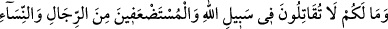
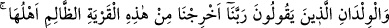
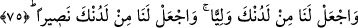

Hâfız (k.s.) şöyle der:
Birgün bir keder ulaşırsa sana, üzülme
Git şükret Hakk’a, Allah etmesin beterin de beteri vardır
Bil ki, nefis ve şeytanla cihâdın silah ve cephanesi Allah’ı zikretmektir. İnsan nefsânî
arzularının esîri olmaktan ancak zikrullah sâyesinde kurtulur. Rasûlullah (s.a.v) şöyle
buyurmuştur: “Allah’ı zikretmek maksadıyla bir araya gelen hiç bir topluluk yoktur ki,
melekler onların etrâfını çevirmiş rahmet onları kaplamış, üzerlerine sekînet inmiş
ve Allah da onları kendi katındakilerin yanında anmış olmasın.”[78]
Ebû Vâkıd Hâris b. Avf (r.a.)’dan rivâyet edildiğine göre: Rasûlullah (s.a.v)
etrâfında insanlar olduğu halde mescidde otururken üç adam çıka geldi. İkisi Rasûlullah
(s.a.v)’a yöneldi, ötekisi ise bırakıp gitti. Bu iki adamdan biri, halkada bir boşluk bulup
oturdu. Diğeri halkadakilerin arkasına oturdu. Üçüncüsüne gelince, o arkasını dönüp
gitti. Rasûlullah (s.a.v) sözünü bitirince, “Bu üç adamın durumunu size bildireyim mi?
Onlardan birisi Allah’a sığındı, Allah da onu himâyesine aldı. Diğeri Allah’tan hayâ
etti, Allah da ondan haya etti. Diğeri ise yüz çevirdi, Allah da ondan yüz çevirdi.”
buyurdu.[79]
Hakiki kulağı olan dinleyip görsün her nesnenin
Cenâb-ı Hakk’ı zikredip, cûş u hurûşa geldiğini
Sadece gülüne tesbih okuyan (gülünü anan) bülbül değildir
Her bir diken Allah’ın zikrinde bir lisandır
75- Size ne oldu da Allah yolunda ve «Rabbimiz! Bizi, halkı zalim olan bu
şehirden çıkar, bize tarafından bir sahip gönder, bize katından bir yardımcı yolla!»
diyen zavallı erkekler, kadınlar ve çocuklar uğrunda savaşmıyorsunuz!
“Size ne oldu da” Ey mü’minler size ne tür bir hastalık arız oldu ki “Allah yolunda”
savaşmıyorsunuz ve cihâdı terkediyorsunuz? Yâni, sizin savaşı terketmek için özrünüz
yoktur. Bu soru, kınama mânâsınadır. Bu söz ancak bir ihmal olduğunda söylenir. “ve
“Rabbimiz! Bizi, halkı” en büyük zulm olan şirk ile ve müslümanlara eziyet ederek
“zâlim olan bu şehirden” yâni Mekke’den “çıkar, bize tarafından bir sâhip gönder”,
dînimizi ve şerîatımızı koruyacak, ihtiyaçlarımızı görecek ve işlerimizi üstlenecek